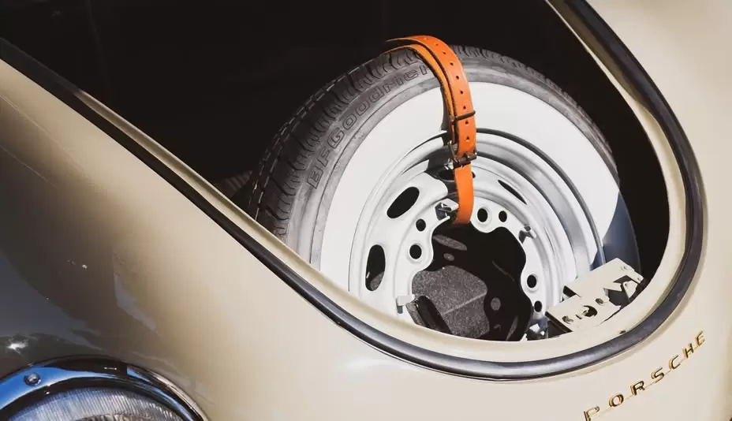

AUTO NIEUWS

HOE VER KUN JE RIJDEN OP EEN DONUT-BAND?
Mar 16 2023
Hoe ver kun je rijden op een donut-band?
Donut-banden werden oorspronkelijk ontworpen als een praktische oplossing voor noodgevallen onderweg, en zijn compact en ruimtebesparend. Maar hoe ver kun je rijden op een donut-band voordat je hem moet vervangen?
Over het algemeen kunnen donut-banden slechts 50 tot 70 kilometer afleggen voordat ze moeten worden vervangen door nieuwe banden. Hoewel dit niet veel is, kan het je wel helpen om veilig naar een reparatiewerkplaats te rijden.
Het is belangrijk om te onthouden dat de rijtijd van een donut-band afhankelijk is van de duurzaamheid van de banden die je gebruikt. Er zijn verschillende soorten reservebanden op de markt, waaronder donut-banden en lekke banden, en de duurzaamheid varieert.
Donut-banden worden vaak gebruikt voor MINI- of BMW-auto's bij lekke banden vanwege hun dikke wand en hoge duurzaamheid. Als je tijdens het rijden een lekke band hebt, kun je veilig ongeveer 80 kilometer rijden voordat je het beschadigde gebied moet vervangen of repareren.
Het is belangrijk om te weten dat donut-banden een smallere diameter hebben dan standaard banden en dat het reservewiel moet overeenkomen met de capaciteit van de container. Experts raden aan om tijdens het rijden op donut-banden niet harder dan 50 kilometer per uur te rijden en niet meer dan 70 kilometer af te leggen.
Als je op een donut-band rijdt, moet je voorzichtig zijn en de volgende regels volgen:
* Rijd met een stabiele snelheid van niet meer dan 50 kilometer per uur
* Pomp de band volledig op en houd deze altijd op een veilig niveau
* Wees voorzichtig bij het nemen van bochten of bij het remmen om gevaar te vermijden
* Beheers het tractiecontrolesysteem en de carrosseriestabiliteit redelijk goed.
Wat is het verschil tussen een reservewiel en een donut?
Het verschil tussen een reservewiel en een donut is de grootte en kwaliteit van de band.
Een reservewiel heeft meestal dezelfde grootte als de andere wielen op de auto en is van vergelijkbare kwaliteit. Dit type wiel wordt gebruikt als normale banden en werkt als een volwaardig alternatief. Het is belangrijk om alle vijf banden regelmatig te laten roteren om de levensduur te verlengen.
Een donut is echter compacter en van mindere kwaliteit dan een standaard band. Het is bedoeld als tijdelijke oplossing en heeft meestal geen diepe groeven of schroefdraad. Donuts zijn alleen geschikt voor kortere ritten en mogen niet op snelwegen of met hoge snelheden worden gebruikt. Het is belangrijk om de bandenspanning regelmatig te controleren om te voorkomen dat het gas ontsnapt en om explosies te voorkomen.
Kun je een week op een donut rijden?
Nee, het is niet mogelijk om een week op een donut te rijden. Een donut is bedoeld voor tijdelijk gebruik en kan slechts een afstand van 70 kilometer afleggen. Het gebruik van een donut voor een langere periode kan de werking van de auto beïnvloeden en brengt de veiligheid van de bestuurder en andere weggebruikers in gevaar.
Kun je 500 kilometer op donuts rijden?
Nee, het is niet aan te raden om 500 kilometer op donuts te rijden. Het is belangrijk om te onthouden dat donuts alleen geschikt zijn voor kortere ritten en niet bedoeld zijn voor lange afstanden. Volgens de verkeerswetten mag de snelheid van een auto met een reservewiel niet hoger zijn dan 50 kilometer per uur, vooral als de afstand die de donut kan afleggen niet meer is dan 80 kilometer is.
Wat gebeurt er als je te lang op donuts rijdt?
Als je te lang op donuts rijdt, kan dit schade veroorzaken aan de motor en de transmissie van de auto. Het is belangrijk om een donut alleen te gebruiken als tijdelijke oplossing totdat de beschadigde band is vervangen. Het is niet geschikt voor langdurig gebruik en kan de veiligheid van de bestuurder en andere weggebruikers in gevaar brengen.
Hoe lang kun je rijden op een runflat band?
Het is belangrijk om het onderscheid te maken tussen gewone banden en lekke banden om te bepalen hoe uw voertuig moet worden behandeld. In het geval van een standaardband, zal de rijtijd van het voertuig afhankelijk zijn van de luchtlekkage wanneer er een drukverlies optreedt en de psi ongebalanceerd raakt.
Als u zich in deze situatie bevindt, hoeft u zich echter geen zorgen te maken, aangezien een enquête heeft aangetoond dat de gemiddelde afstand die u kunt afleggen met een lekke band ongeveer 100 kilometer is, wat ruim voldoende is om de juiste autoreparatiewerkplaats te vinden.
Een andere optie is de runflat band die eruit ziet als een gewone band, maar het unieke kenmerk heeft dat het het gewicht van het voertuig kan dragen zonder gasdruk. Dit komt door de platte technologie die het mogelijk maakt om zonder psi te werken en geschikt is voor vergelijkbare vlakke situaties.
Het begrijpen van de regels en werking van reservebanden is van groot belang voor uw veiligheid op de weg. Hoewel deze situaties elkaar overlappen, kan het helpen om ze te onderscheiden. We hopen dat dit artikel u helpt om problemen met uw banden beter te begrijpen. Als u vragen of zorgen heeft, kunt u deze gerust achterlaten in de opmerkingen en we zullen zo snel mogelijk reageren.
NIEUWE BERICHTEN